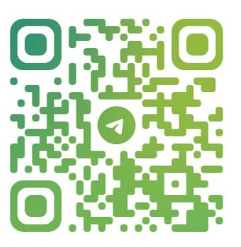
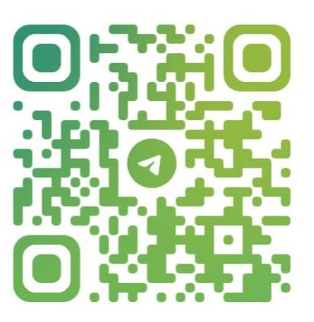
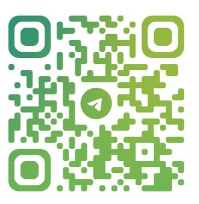

Ingresa Aqui
Ingresa a través de nuestro canal oficial en Telegram para iniciar a ganar con tu inversión.
 

En Anónimo y Confiable, te ofrecemos una forma segura y sencilla de hacer crecer tu dinero todos los días. A través de estrategias avanzadas de trading en la bolsa de valores, inversiones en criptomonedas y préstamos gestionados por expertos, generamos rendimientos constantes para nuestros inversores.
Inversiones globales: Participa desde cualquier parte del mundo con divisas y criptomonedas.
Ganancias diarias: El crecimiento de tu inversión en tiempo real a través de nuestro canal exclusivo de Telegram.
Préstamos accesibles: Obtén financiamiento rápido con pocos requisitos y tasas competitivas.
Tú decides cómo y cuándo empezar. Únete a nosotros y deja que tu dinero trabaje por ti.
En Anónimo y Confiable, hacemos que tu dinero trabaje por ti de forma segura y transparente. Nuestro sistema combina trading en la bolsa de valores, inversiones en criptomonedas y préstamos gestionados por expertos para generar rendimientos diarios.
🔹 Invierte fácilmente desde cualquier parte del mundo con divisas o criptomonedas.
🔹 Genera ganancias diarias que se suman automáticamente a tu saldo.
🔹 Monitorea tu inversión en tiempo real a través de nuestro canal exclusivo de Telegram.
🔹 Retira tu dinero cuando quieras, a medida que tus fondos crecen cada día.
Cada día que pase, tu saldo aumentará y tendrás más dinero disponible para retirar. Sin complicaciones, sin trámites largos, solo resultados reales.
Ingresa a través de nuestro canal oficial en Telegram para iniciar a ganar con tu inversión.
